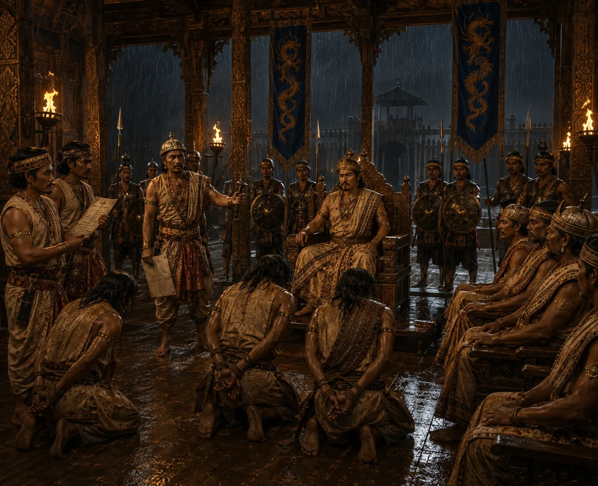

Royal Inquest and Execution of Suhenphaa's Assassins
1493 · The coming of Sukaphaa

Supimphaa convenes a tribunal, identifies the conspirators behind his father's murder, and executes them publicly.
Sources have not yet been catalogued for this record.
People: Supimphaa